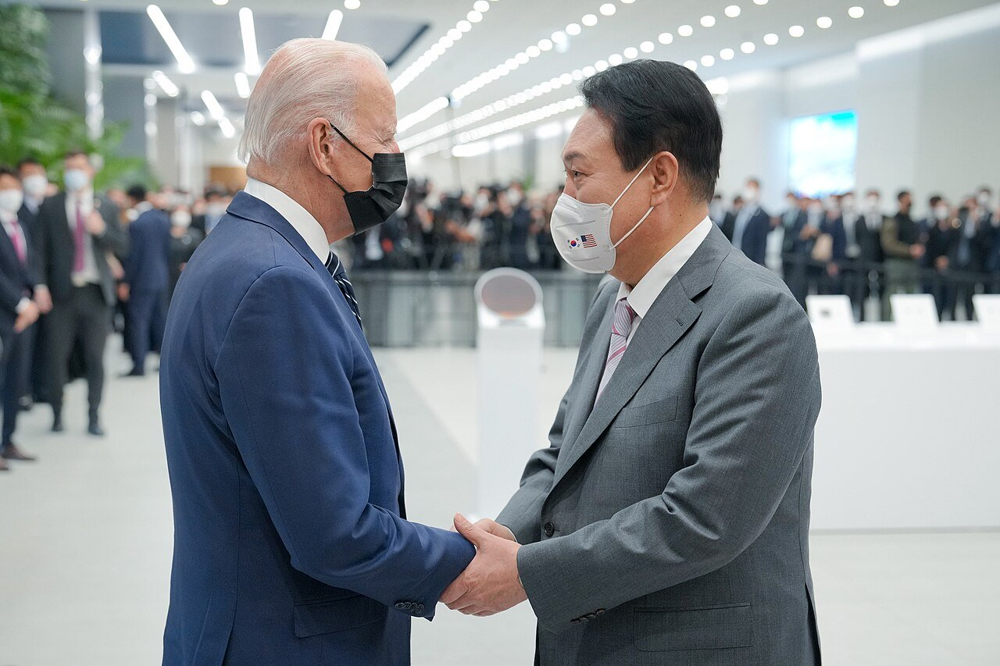
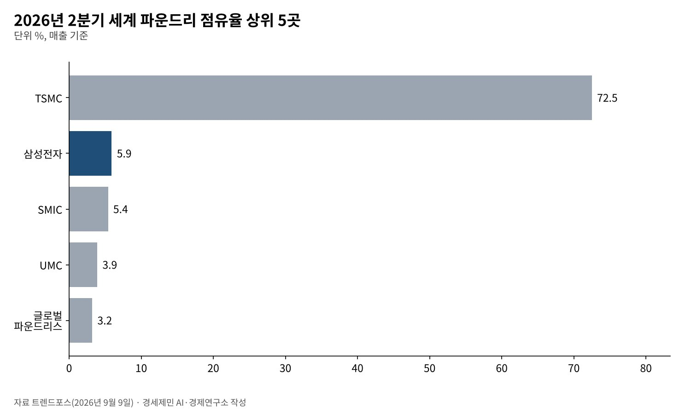
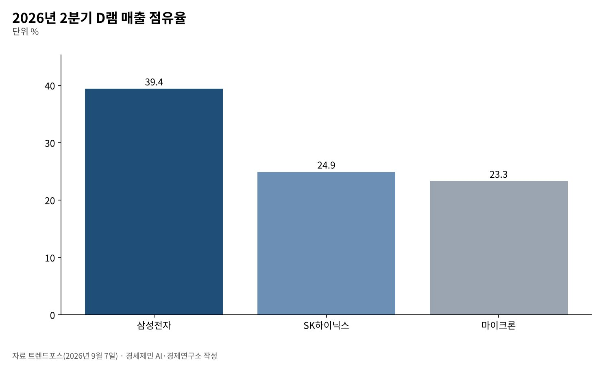

[경세제민] 반도체 애치슨 라인, 한국은 어디에 서 있나
미국 기술 봉쇄선 안의 한국, 중국 공장은 「유지만 하고 키우지 말라」
D램 1위 되찾은 삼성, 파운드리는 TSMC 72.5% 대 삼성 5.9%로 벌어져
수출 폭증과 원화 강세 뒤에 고용 둔화와 고유가, 대체 불가능해야 버틴다
1950년 1월 딘 애치슨 미국 국무장관은 태평양 방위선을 설명하며 한반도를 그 선 밖에 뒀다. 다섯 달 남짓 뒤 한국전쟁이 터졌다. 선 하나가 한 나라의 운명을 가를 수 있다는 기억이다.
76년이 지난 지금 미국은 기술 위에 선을 긋는다. 선 안쪽은 미국 장비와 설계 도구를 쓰고, 바깥은 막힌다. 한국 반도체는 안쪽에 섰다. 그러나 안쪽이라고 마음대로 움직일 수 있는 것은 아니다.
올해 한국 반도체는 사상 최대 호황을 맞았다. 9월 수출은 1년 전보다 83.5% 늘었다. 같은 시기 미국의 규제는 중국 공장의 앞날을 묶었다. 호황과 제약이 한꺼번에 왔다.

1. 중국 공장, 「돌리되 키우지 말라」
미국 상무부 산업안보국(BIS)은 2025년 8월 29일 검증된 최종사용자(VEU) 제도를 닫았다. 이 제도는 중국에 있는 외국 기업 공장이 미국산 장비를 허가 없이 들여오게 해 줬다. 삼성전자와 SK하이닉스 중국 공장이 대상이었다.
BIS는 관보 게재 뒤 120일 안에 개별 허가를 받으라고 했다. 기존 공장 운영을 위한 허가는 내주겠다고 밝혔다. 다만 「중국 공장의 생산능력 확대나 기술 업그레이드 허가는 내줄 뜻이 없다」고 못 박았다.
공장은 돌아가지만 세대 교체가 막힌다. 반도체 공장은 공정을 바꾸지 못하면 해마다 가치가 깎인다. 중국 공장은 수명이 정해진 자산이 됐다. 출구 전략을 서두를 때다(연구소 판단).
선은 고정돼 있지도 않다. BIS는 1월 13일 엔비디아 H200 같은 인공지능 칩의 중국 수출 허가를 사안별로 심사한다고 바꿨다. 트럼프 대통령이 2025년 12월 8일 승인 고객 판매를 허용한 데 따른 조치다.
2. 파운드리, 격차는 더 벌어졌다
트렌드포스 집계로 올해 2분기 세계 파운드리(반도체 위탁생산) 시장에서 TSMC 점유율은 72.5%다. 삼성전자는 5.9%다. 2분기 매출은 TSMC 약 402억달러, 삼성전자 32억6000만달러다.
삼성전자 매출도 늘었지만 경쟁사가 더 빨리 컸다. 중국 SMIC가 5.4%로 삼성을 0.5%포인트 차이로 바짝 쫓는다. 미국의 장비 통제에도 중국 위탁생산 업체는 자국 수요를 업고 자란다.
트렌드포스는 삼성전자의 고대역폭메모리(HBM) 기반 다이 같은 첨단 공정 수주가 늘었다고 짚었다. 메모리와 위탁생산을 함께 가진 회사의 강점이다. 문제는 그 강점이 점유율로 이어지는 속도다.

3. 메모리, 삼성이 D램 1위를 되찾았다
메모리는 판이 다시 뒤집혔다. 트렌드포스 집계로 2분기 D램 매출 점유율은 삼성전자 39.4%, SK하이닉스 24.9%, 마이크론 23.3%다. 삼성전자는 매출 609억8000만달러로 1위에 올랐다.
D램 업계 매출은 한 분기 만에 59.5% 늘어 1547억3000만달러다. 범용 D램 계약가격이 크게 오른 덕이다. 트렌드포스는 삼성전자가 HBM4를 먼저 대량 생산하고 출하해 출하량을 늘렸다고 봤다.
SK하이닉스는 출하에서 HBM 비중이 가장 높아 평균 판매가격 상승 폭이 상대적으로 작았다. 엔비디아와 손잡고 HBM을 먼저 잡은 전략이 가격 급등기에는 오히려 덜 유리하게 작동했다.
두 회사의 경쟁은 한국 메모리 전체의 몫을 키웠다. 삼성전자와 SK하이닉스를 합하면 2분기 D램 매출의 64.3%다. 미국 마이크론 혼자 이 공급을 대신할 수 없다. 미국이 한국을 선 안쪽에 두는 까닭이다.

4. 수출 폭증과 원화 강세, 그 그늘
호황은 숫자로 보인다. 관세청 잠정치로 10월 1~20일 수출은 616억달러로 1년 전보다 105.4% 늘었다. 반도체 수출은 222.5% 늘었다. 하루 평균 수출액 47억4000만달러는 역대 최대다.
관세청은 조업일수 차이로 수치가 달라질 수 있다고 했다. 지난해 10월은 추석 연휴가 길었다. 그래도 9월 수출이 83.5% 늘어난 흐름과 겹친다. 반도체 업체가 판 달러에 원화는 10월 20일 1328.1원으로 2년 만에 가장 강해졌다.
그늘도 있다. 재정경제부는 9월 취업자 증가가 11만3000명으로 폭이 줄었다고 밝혔다. 중동전쟁 등 불확실성과 고유가에 따른 물가 압력, 취약계층의 고용 여건 악화를 부담으로 꼽았다.
반도체 이익이 기업 계정에 쌓이는 속도와 일자리가 늘어나는 속도가 다르다. 한국은행은 9월 수출물가가 40.9% 올랐다고 집계했다. 값으로 버는 호황은 고용을 크게 늘리지 않는다(연구소 판단).
5. 동맹의 값, 투자와 협상력
한국은 2025년 11월 14일 미국과 전략적 투자 양해각서를 맺었다. 금융위원회 자료로 그 가운데 조선 협력 투자만 1500억달러다. 올해 6월에는 한미전략투자공사와 조선 3사가 이행 협약을 맺었다.
동맹은 시장 접근을 지키지만 값을 매긴다. 미국 공장 투자가 늘면 국내 협력업체가 따라가기 어렵다. 대기업의 해외 투자와 국내 공급망의 일감을 함께 셈해야 한다(연구소 판단).
국내 생태계는 정책금융이 받친다. 국민성장펀드는 7월 HBM 테스트 장비 업체의 천안 공장 증설에 500억원 저리대출을 승인했다. 장비와 소재 기업을 키우는 일이 대기업 한두 곳의 호황을 산업 전체의 힘으로 바꾼다.
6. 대체 불가능해야 산다
미국이 한국을 선 안쪽에 둔 것은 한국 메모리가 필요해서다. 필요는 영원하지 않다. 중국 기업은 보조금을 업고 자라고, 미국은 자국 생산을 키운다. 시간이 지나면 한국을 덜 필요로 할 수 있다.
살아남는 길은 대체 불가능성이다. 메모리는 HBM 세대 경쟁에서 앞서야 하고, 위탁생산은 첨단 공정 수율로 고객을 되찾아야 한다. 설계 전문 기업 생태계도 키워야 한다. 제조만 남으면 협상력도 줄어든다.
선 안쪽에 섰다는 사실이 안전을 보장하지 않는다. 1950년의 선은 지도 위에 있었고 지금의 선은 허가증과 공급망 위에 있다. 기술에서 밀리지 않는 나라만이 그 선이 다시 그어질 때 자리를 지킨다.
참고문헌
기관 자료
- 미국 상무부 산업안보국(BIS), 「Department of Commerce Closes Export Controls Loophole for Foreign-Owned Semiconductor Fabs in China」(보도자료), 2025년 8월 29일, 「Department of Commerce Revises License Review Policy for Semiconductors Exported to China」(보도자료), 2026년 1월 13일. BIS 보도자료 목록. https://www.bis.gov/news-updates
- 관세청(재정경제부 게재), 「2026년 10월 1일 ~ 10월 20일 수출입 현황(잠정치)」, 2026년 10월 21일, KDI 경제교육·정보센터 게재. https://eiec.kdi.re.kr/policy/materialView.do?num=288360
- 재정경제부 경제정책국, 「2026년 10월 최근 경제동향」, 2026년 10월 16일, KDI 경제교육·정보센터 게재. https://eiec.kdi.re.kr/policy/materialView.do?num=288176
- 한국은행 경제통계1국, 「2026년 9월 수출입물가지수 및 무역지수(잠정)」, 2026년 10월 16일, KDI 경제교육·정보센터 게재. https://eiec.kdi.re.kr/policy/materialView.do?num=288195
- 금융위원회, 「한미전략투자공사 및 정책금융기관-조선3사간 한미 조선협력투자 업무협약 체결」(보도자료), 2026년 6월 25일. https://www.fsc.go.kr/no010101/87187
- 금융위원회, 「국민성장펀드가 디스플레이 산업의 초격차와 HBM 공급망 경쟁력 강화를 지원합니다」(보도자료), 2026년 7월 30일. https://www.fsc.go.kr/no010101/87442
연구 논문과 보고서
- TrendForce, "Global Foundry Revenue Approaches US$53.49 Billion in 2Q26 as SMIC Narrows Market Share Gap with Samsung", 2026년 9월 9일. https://www.trendforce.com/presscenter/news/20260909-13225.html
- TrendForce, "DRAM Industry Revenue Rises 59.5% QoQ in 2Q26 as Supply Expansion Continues to Lag Demand Growth", 2026년 9월 7일. https://www.trendforce.com/presscenter/news/20260907-13219.html
언론 보도
- 김혜란, "원·달러 환율, 올해 최저 종가…2.2원 내린 1328.1원 마감", 서울경제, 2026년 10월 20일. https://m.sedaily.com/article/20103845
- 최민경, "원/달러 환율, 2.2원 내린 1328.1원", 머니투데이, 2026년 10월 20일. https://www.mt.co.kr/economy/2026/10/20/2026102015350643046
[사진 출처]
- [사진1] Office of the President of the United States, "President Biden and Yoon Suk-yeol at the Samsung Electronics Pyeongtaek Campus.jpg", 위키미디어 공용, 퍼블릭 도메인. https://commons.wikimedia.org/wiki/File:President_Biden_and_Yoon_Suk-yeol_at_the_Samsung_Electronics_Pyeongtaek_Campus.jpg
※ 이 기사는 AI 프로그램 클로드를 활용해 작성했습니다.
관련기사
- [경세제민] 엉터리 경제학, 공급 대책을 거듭 내놔도 집값 기대는 왜 꺾이지 않나
- [경세제민] 반도체 글로벌가치사슬과 인천국제공항, 값이 무게를 이기는 시대
- [경세제민] AI 대전환 시대, 인천항만 업계 포용적 성장 방안
- [서평] 슘페터 『경제분석의 역사』 1권, 300년 전 질문이 오늘도 유효하다
저작권자 © AI경세제민 무단전재 및 재배포, AI학습 및 활용 금지